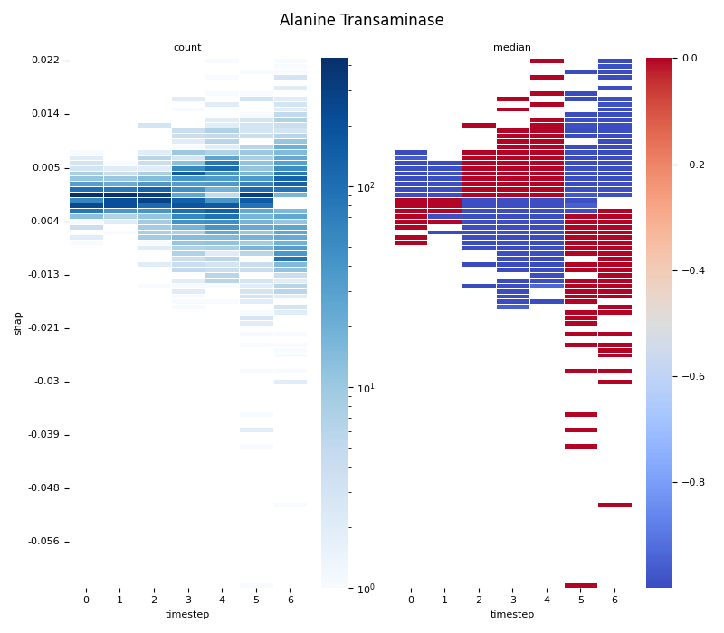
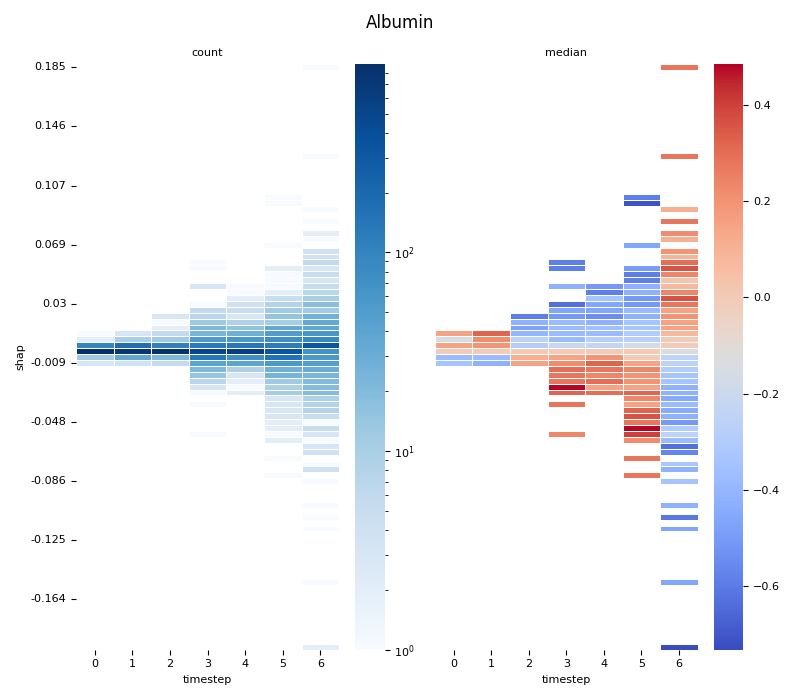

Note
Click here to download the full example code
07.d stats.2dbin with shap.csv
Use binned_statistic_2d and display using heatmap.
- 
- 
Out:
Unnamed: 0 sample timestep features feature_values shap_values
12 12 0 0 Creatinine 0.0 -0.001081
17 17 0 0 Chloride 0.0 -0.000858
21 21 0 0 C-Reactive Protein 0.0 0.010186
22 22 0 0 Albumin 0.0 0.000411
23 23 0 0 Alkaline Phosphatase 0.0 0.000486
27 27 0 0 Alanine Transaminase 0.0 -0.001809
28 28 0 0 Bilirubin 0.0 0.000500
48 48 0 1 Creatinine 0.0 -0.001033
53 53 0 1 Chloride 0.0 0.001109
57 57 0 1 C-Reactive Protein 0.0 0.005363
0. Computing... Alanine Transaminase
1. Computing... Albumin
2. Computing... Alkaline Phosphatase
3. Computing... Bilirubin
4. Computing... C-Reactive Protein
5. Computing... Chloride
6. Computing... Creatinine
9 # Libraries
10 import seaborn as sns
11 import pandas as pd
12 import numpy as np
13 import matplotlib as mpl
14 import matplotlib.pyplot as plt
15
16 from scipy import stats
17 from pathlib import Path
18 from matplotlib.colors import LogNorm
19
20 #plt.style.use('ggplot') # R ggplot style
21
22 # See https://matplotlib.org/devdocs/users/explain/customizing.html
23 mpl.rcParams['axes.titlesize'] = 8
24 mpl.rcParams['axes.labelsize'] = 8
25 mpl.rcParams['xtick.labelsize'] = 8
26 mpl.rcParams['ytick.labelsize'] = 8
27
28 # Constant
29 SNS_HEATMAP_CBAR_ARGS = {
30 'C-Reactive Protein': { 'vmin':-0.4, 'vmax':-0.2, 'center':-0.35 },
31 'Bilirubin': { 'vmin':-0.4, 'vmax':-0.2, 'center':-0.35 },
32 'Alanine Transaminase': {},
33 'Albumin': {},
34 'Alkaline Phosphatase': { 'vmin':-0.6, 'vmax':-0.2 },
35 'Bilirubin': {},
36 'C-Reactive Protein': {},
37 'Chloride': {},
38 }
39
40 # Load data
41 path = Path('../../datasets/shap/')
42 data = pd.read_csv(path / 'shap.csv')
43
44 # Filter
45 data = data[data.features.isin([
46 'Alanine Transaminase',
47 'Albumin',
48 'Alkaline Phosphatase',
49 'Bilirubin',
50 'C-Reactive Protein',
51 'Chloride',
52 'Creatinine'
53 ])]
54
55 # Show
56 print(data.head(10))
57
58 # figsize = (8,7) for 100 bins
59 # figsize = (8,3) for 50 bins
60 #
61 # .. note: The y-axis does not represent a continuous space,
62 # it is a discrete space where each tick is describing
63 # a bin.
64
65 # Loop
66 for i, (name, df) in enumerate(data.groupby('features')):
67
68 # Info
69 print("%2d. Computing... %s" % (i, name))
70
71 # Get variables
72 x = df.timestep
73 y = df.shap_values
74 z = df.feature_values
75 n = x.max()
76 vmin = z.min()
77 vmax = z.max()
78 nbins = 100
79 figsize = (8, 7)
80
81 # Create bins
82 binx = np.arange(x.min(), x.max()+2, 1) - 0.5
83 biny = np.linspace(y.min(), y.max(), nbins)
84
85 # Compute binned statistic (count)
86 r1 = stats.binned_statistic_2d(x=y, y=x, values=z,
87 statistic='count', bins=[biny, binx],
88 expand_binnumbers=False)
89
90 # Compute binned statistic (median)
91 r2 = stats.binned_statistic_2d(x=y, y=x, values=z,
92 statistic='median', bins=[biny, binx],
93 expand_binnumbers=False)
94
95 # Compute centres
96 x_center = (r1.x_edge[:-1] + r1.x_edge[1:]) / 2
97 y_center = (r1.y_edge[:-1] + r1.y_edge[1:]) / 2
98
99 # Flip
100 flip1 = np.flip(r1.statistic, 0)
101 flip2 = np.flip(r2.statistic, 0)
102
103 # Display
104 fig, axs = plt.subplots(nrows=1, ncols=2,
105 sharey=True, sharex=False, figsize=figsize)
106
107 sns.heatmap(flip1, annot=False, linewidth=0.5,
108 xticklabels=y_center.astype(int),
109 yticklabels=x_center.round(3)[::-1], # Because of flip
110 cmap='Blues', ax=axs[0], norm=LogNorm(),
111 cbar_kws={
112 #'label': 'value [unit]',
113 'use_gridspec': True,
114 'location': 'right'
115 }
116 )
117
118 sns.heatmap(flip2, annot=False, linewidth=0.5,
119 xticklabels=y_center.astype(int),
120 yticklabels=x_center.round(3)[::-1], # Because of flip
121 cmap='coolwarm', ax=axs[1], zorder=1,
122 **SNS_HEATMAP_CBAR_ARGS.get(name, {}),
123 #vmin=vmin, vmax=vmax, center=center, robust=False,
124 cbar_kws={
125 #'label': 'value [unit]',
126 'use_gridspec': True,
127 'location': 'right'
128 }
129 )
130
131 # Configure ax0
132 axs[0].set_title('count')
133 axs[0].set_xlabel('timestep')
134 axs[0].set_ylabel('shap')
135 axs[0].locator_params(axis='y', nbins=10)
136
137 # Configure ax1
138 axs[1].set_title('median')
139 axs[1].set_xlabel('timestep')
140 #axs[1].set_ylabel('shap')
141 axs[1].locator_params(axis='y', nbins=10)
142 axs[1].tick_params(axis=u'y', which=u'both', length=0)
143 # axs[1].invert_yaxis()
144
145 # Identify zero crossing
146 #zero_crossing = np.where(np.diff(np.sign(biny)))[0]
147 # Display line on that index (not exactly 0 though)
148 #plt.axhline(y=len(biny) - zero_crossing, color='lightgray', linestyle='--')
149
150 # Generic
151 plt.suptitle(name)
152 plt.tight_layout()
153
154 # Show only first N
155 if int(i) > 5:
156 break
157
158 # Show
159 plt.show()
Total running time of the script: ( 0 minutes 6.285 seconds)